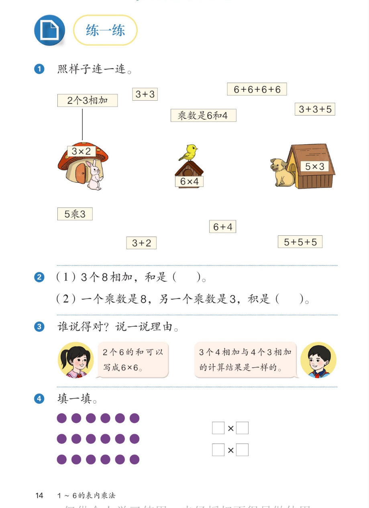

🔗 1~6的表内乘法 · 课本第 14 页 · 练一练 1~4
人教版《数学》二年级上册 · 有声图文带读 · 先想后看解析
题数
6
认知
2
强化
3
拓展
1
本页重点
乘法意义 + 说理
🎧 分两步学：
① 解析教材图片
——纯声音读图，读到哪一块哪一块闪动提示；关键处先倒计时让你思考，再在图片下方给出解析并朗读。
② 分层提问练习
——六道分层题（认知 / 强化 / 拓展），先思考再展开解析、朗读参考答案；这一步不再回到图片。
也可以随时点任意一句话、图上任意一块单独听；点课本文字卡还会展开答案。
教材图片（点块听读，读到哪块哪块闪）

📖 人教版《数学》二年级上册 · 课本第 14 页 · 图片仅供个人学习，版权归人民教育出版社所有
🤔 想一想（点我可跳过）
课本的文字（点句子：听读 + 看答案）
课本第 1 题
照样子连一连。
看答案 ▾
连线答案（示例 2个3相加→3×2 已连）：
•
3+3
→ 2 个 3 相加 →
3×2
•
6+6+6+6
→ 4 个 6 相加 →
6×4
•
乘数是 6 和 4
→
6×4
•
5 乘 3
→
5×3
；
5+5+5
→ 3 个 5 相加 →
5×3
•
不连
：3+3+5、6+4、3+2（
加数不相同
，不能写成乘法）
课本第 2 题
(1) 3 个 8 相加，和是（ ）。(2) 一个乘数是 8，另一个乘数是 3，积是（ ）。
看答案 ▾
(1)：
8+8+8=
24
（3 个 8 相加）。
(2)：
8×3=
24
。
发现：
两小题的得数相同——乘法本来就是加数相同的加法的简便写法。
课本第 3 题
谁说得对？说一说理由。
看答案 ▾
判一判：
女生说"2 个 6 的和可以写成 6×6"——
不对
；男生说"3 个 4 相加与 4 个 3 相加的计算结果一样"——
对
。
理由见下面两张气泡卡。
女生的气泡 ✘
"2 个 6 的和可以写成 6×6。"
看答案 ▾
不对。
2 个 6 相加 = 6+6 =
6×2
（或 2×6）；
6×6 是 6 个 6 相加
（6 个 6 连加），意思完全不同。
男生的气泡 ✔
"3 个 4 相加与 4 个 3 相加的计算结果是一样的。"
看答案 ▾
对。
3 个 4 相加：4+4+4=
12
；4 个 3 相加：3+3+3+3=
12
。
这就是上一页例 2 的发现：
乘数交换位置，积不变
（4×3=3×4=12）。
课本第 4 题
填一填：□×□
看答案 ▾
看点子图：
每行
6
个，有
3
行（共 18 个）。
横着看：
3 个 6 相加 →
6×3
；
竖着看：
6 个 3 相加 →
3×6
。
两个答案都对——乘数交换位置，积不变。
分层提问练习（先想后看解析）
➕
认知
3 个 8 相加，和是多少？写出算式。
看解析
🤔 想一想
解析：
算式：
8+8+8=24
3 个 8 连加，和是
24
。
✖️
认知
一个乘数是 8，另一个乘数是 3，积是多少？
看解析
🤔 想一想
解析：
算式：
8×3=24，积是
24
和第 (1) 小题得数相同——
乘法就是加数相同的加法的简便写法
。
🔗
强化
第 1 题：哪些卡片能连到房子上？哪些不能？为什么？
看解析
🤔 想一想
解析：
能连：
3+3→3×2；6+6+6+6→6×4；乘数是6和4→6×4；5乘3→5×3；5+5+5→5×3
不能连：
3+3+5、6+4、3+2 ——
加数不相同
💡 判断标准：只有
加数相同
的加法才能写成乘法
👧
强化
"2 个 6 的和可以写成 6×6"，对吗？为什么？
看解析
🤔 想一想
解析：
不对
2 个 6 相加 = 6+6 =
6×2
6×6 是 6 个 6 相加
——乘法算式里，一个乘数是"相同的加数"，另一个是"个数"，不能混
👦
强化
"3 个 4 相加与 4 个 3 相加结果一样"，对吗？说理由。
看解析
🤔 想一想
解析：
对
3 个 4 相加：4+4+4=
12
4 个 3 相加：3+3+3+3=
12
理由：
乘数交换位置，积不变
（4×3=3×4）
🚀
拓展
用「6×4」编一个数学小故事。
看解析
🤔 想一想
解析（开放题）：
例一：
每盘放 4 个苹果，放 6 盘，一共有多少个？4×6=24。
例二：
每组 6 人，3 组做游戏，一共有多少人？6×3=18。
🌈 故事里要有"每份同样多 + 份数"，能列出 6×4 就算对
① 解析教材图片
② 分层提问练习
⏹ 停止
纯声音 + 高亮跟随 · 想好才出解析
← 返回导航